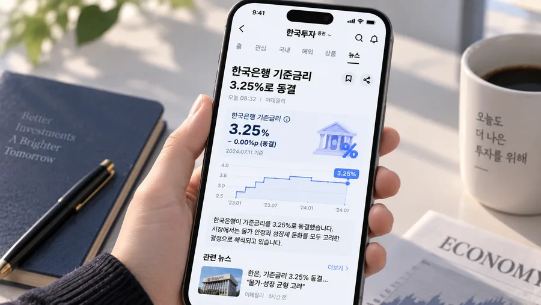

9:41
전체
AI추천
반도체
금리
환율
ETF
지금 뜨는 뉴스
1
미국 4월 CPI 발표
arrow_forward_ios
2
코스피 2,750선 회복 마감
arrow_forward_ios
3
엔비디아, 차세대 AI칩 공개
arrow_forward_ios
4
원·달러 환율 1,379원 돌파
arrow_forward_ios
5
한국은행 기준금리 3.25%로 동결
arrow_forward_ios
6
국제유가 배럴당 85달러 상승
arrow_forward_ios
7
삼성전자 3나노 파운드리 수주 확대
arrow_forward_ios
8
테슬라 실적 발표 앞두고 주가 변동성 확대
arrow_forward_ios
9
중국 4월 수출 예상치 하회
arrow_forward_ios
10
美 연준 위원, 추가 금리인상 가능성 시사
arrow_forward_ios
1
미국 4월 CPI 발표
arrow_forward_ios
실시간 타임라인
최근 추가순
sync_alt
해당 카테고리의 뉴스가 아직 없어요.
09:32
한국은행 기준금리 3.25%로 동결
글로벌 관세 전쟁 우려로 달러 환율이 금융위기 이후 최고치를 기록했습니다.
#물가
#CPI
#인플레이션
09:12
엔비디아, 차세대 AI칩 공개
성능 1.5배 향상, HBM4 지원으로 AI 연산 속도 크게 개선
#엔비디아
#AI반도체
08:45
원,달러 환율 1,379원 돌파
달러 강세 지속, 외국인 주식 순매도 확대로 원화 약세 압력 확대
#환율
#달러
08:32
한국은행 기준금리 3.25%로 동결
성장 둔화 우려에도 물가 안정 우선 고려해 기준금리 동결 결정
#한국은행
#금리

07:15
국제유가 소폭 상승
중동 긴장감 고조 및 OPEC 감산 연장 가능성에 유가 상승
#유가
#에너지